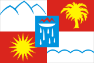

Со́чи — город на юге России, расположен на северо-восточном побережье Чёрного моря (Черноморское побережье России) в Краснодарском крае, на расстоянии 1615 км от Москвы. Административный центр муниципального образования город-курорт Сочи.
Сочи — крупнейший курортный город России и важный транспортный узел, а также крупный экономический и культурный центр черноморского побережья России
Неофициально именуется также летней, южной и курортной «столицей» России. В 2012 году журнал Forbes признал Сочи лучшим городом для ведения бизнеса в стране.
В 2007 году Сочи избран столицей XXII зимних Олимпийских игр. 15 сентября 2009 года Сочи вступил во Всемирный союз олимпийских городов. В период подготовки к Олимпиаде на развитие города и его инфраструктуры потратили 324,9 млрд рублей, из которых частные инвестиции составили 221 млрд.
Город Сочи получил своё название по реке Сочи, впадающей в Чёрное море в черте города. Название реки предполагают заимствованным из абхазо-адыгских языков, так как именно на этих языках говорили ранее жившие в этих краях абхазы, абазины, убыхи, адыги (черкесы). Однако, точное значение названия неизвестно и служит предметом споров.
Впервые название, близкое к «Сочи» упоминает в 1641 году турецкий путешественник Эвлия Челеби, который описывает проживавшие на кавказском побережье примерно в этом месте (абхазо-адыгские?) племена Садше (тюрк. Sadşe) и Суча (Suça). Таким образом, с наибольшей вероятностью название Сочи происходит от имени одного из абхазо-адыгских родов (племён), давно уже не существующего.

Прибрежная часть города Сочи, как и весь участок российского черноморского побережья южнее Туапсе, расположен в зоне влажных субтропиков (Cfa согласно классификации климата Кёппена), что сильно отличает этот регион от более северного участка побережья от Анапы до Туапсе, где господствует типичный полусухой средиземноморский климат.
| Показатель | Янв. | Апр. | Июль | Окт. | Год |
|---|---|---|---|---|---|
| Абсолютный максимум,°C | 22,4 | 33,7 | 39,4 | 32,1 | 39,4 |
| Средняя температура, °C | 6,3 | 12,3 | 23,7 | 16,2 | 14,6 |
| Абсолютный минимум, °C | −13,4 | −3,8 | 12,6 | −3,2 | −13,4 |
| Норма осадков, мм | 177 | 109 | 120 | 177 | 16,2 |
Район Сочи и прилегающее к нему черноморское побережье имеют древнюю историю, о чём свидетельствуют археологические находки в регионе. Свои следы здесь оставили доантичные времена, античность, раннее и позднее Средневековье, советский и постсоветский периоды
Первое русское поселение на территории Сочи было образовано в 1838 году. 13 апреля (25 апреля) этого же года русская эскадра недалеко от устья реки Сочи высадила десант, основавший форт Александрия, названный в честь императрицы Александры Фёдоровны. Позже форт стал называться Навагинским — в честь высадившегося первым неудачного десанта Навагинского полка в количестве 300 человек.
Город Сочи основан 21 апреля (3 мая) 1838 года как форт Александрия. На территории нынешнего Сочи во время Кавказской войны также основаны укрепление Святого Духа (в 1837, положившее начало будущему Адлеру), форты Лазаревский и Головинский (1839), ставшие впоследствии посёлками Лазаревское и Головинка. Цель укреплений — пресечение работорговли и контрабандной продажи горцам оружия. В 1839 форт Александрия переименован в Навагинское укрепление. В ходе Крымской войны гарнизоны на побережье вывезли в Новороссийск, так как в Чёрное море вошла англо-французская эскадра под командованием адмирала Эдмунта Лайонса. В 1864 укрепление отстроено заново как Пост Даховский. С 1874 — Даховский Посад, с 1896 — Сочи (по названию реки Сочи, на берегах которой стоял посад).
Сочи — крупный экономический центр Краснодарского края и России. По мнению экономико-географа Натальи Зубаревич, город, будучи «рекреационной столицей», наряду с крупнейшими индустриальными центрами, выступает «мотором» развития, определяющим перспективы и направления развития страны. В основе экономики Сочи лежат торговля, строительство, курортная и туристическая сфера. Её структура на 2015 год: розничная торговля (59 %), строительство (15 %), курорты и туризм (11 %), промышленность (10,6 %), транспорт (3,5 %) и сельское хозяйство (0,9 %). Сочи выступает одним из базовых центров привлечения человеческого и финансового капитала в стране: инвестиции в экономику города за последние 10 лет составили более 1,1 трлн руб. Оборот средних и крупных предприятий Сочи за 2016 год составил более 170,8 млрд рублей. Прирост оборота по сравнению с предыдущим годом — 14,2 %.
Эксперты высоко оценивают вклад города в экономику России, часто включая его в рейтинги развития и инвестиционной привлекательности. В 2010 году Сочи возглавил «Рейтинг городов России по качеству жизни» института «Урбаника»; эксперты отмечали высокий темп развития города, масштабные инвестиции в преддверии Олимпиады 2014 года, благоприятную экологическую обстановку и высокую безопасность жителей. В 2012 году Сочи возглавил рейтинг «30 лучших городов для бизнеса» журнала «Форбс». В 2014 году Сочи занял пятое место в «Интегральном рейтинге крупнейших городов России», отражающем развитие городов по уровню жизни.
Сочи — всесезонный курорт международного уровня; по состоянию на 2016 год, на его территории ведут деятельность 705 классифицированных средств размещения, в их числе: 66 санаториев, 20 пансионатов и баз отдыха, 1 бальнеолечебница и 618 гостиниц (в том числе, 42 новых отеля под управлением 12-и ведущих мировых гостиничных сетей, в том числе Swissotel, Rezidor, Hyatt, Accor, Marriott, Rixos и др.). Открыты 183 пляжных территории, действуют более 100 туристических объектов, работают порядка 70-и экскурсионных компаней. При этом по всей стране доходы от отрасли составляли 161 млрд рублей; таким образом туристическая отрасль города занимает 18,6 % от объёма общего рынка страны.
Товарооборот розничной торговли по средним и крупным предприятиям (на него приходится около 30 % всего товарооборота) в городе за 2016 год составил 57,2 млрд рублей. На территории города ведут деятельность 8 769 объектов потребительской сферы, из них: предприятия стационарной розничной торговли — 5013, предприятия общественного питания — 1450, предприятия оптовой торговли — 335, предприятия сферы услуг — 1083. В Сочи открыты 1807 продовольственных магазинов, 2708 непродовольственных магазинов, 294 магазина смешанной группы товаров, 178 аптек, 16 автосалонов, 20 магазинов при АЗС, 945 павильонов и киосков. Обеспеченность населения торговыми площадями составляет 1106,7 м² на 1000 человек.
По данным 2017 года, оборот торговли в год на душу населения в Сочи в 1,75 раз больше, чем в среднем по России (373 527 руб. в год на человека). При этом он превышает годовой оборот торговли на душу населения во всех городах-миллионниках, Санкт-Петербурге и Москве. Высокий оборот торговли обеспечивают как большой поток туристов, так и высокая средняя заработная плата в городе. Годовой оборот розничной торговли, формируемый постоянными жителями, составляет около 96,2 млрд руб. (52 %). Туристы формируют около 87,83 млрд руб. оборота (48 %)[115].